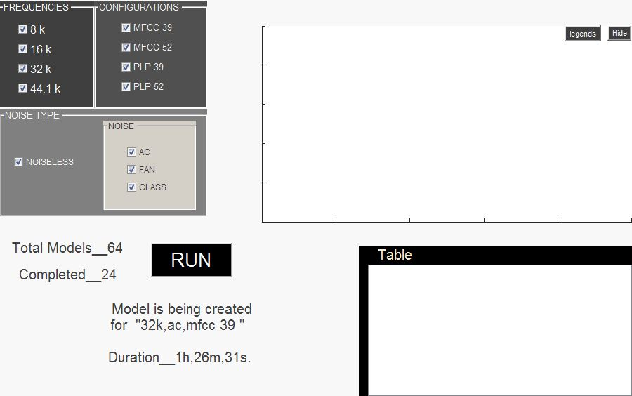
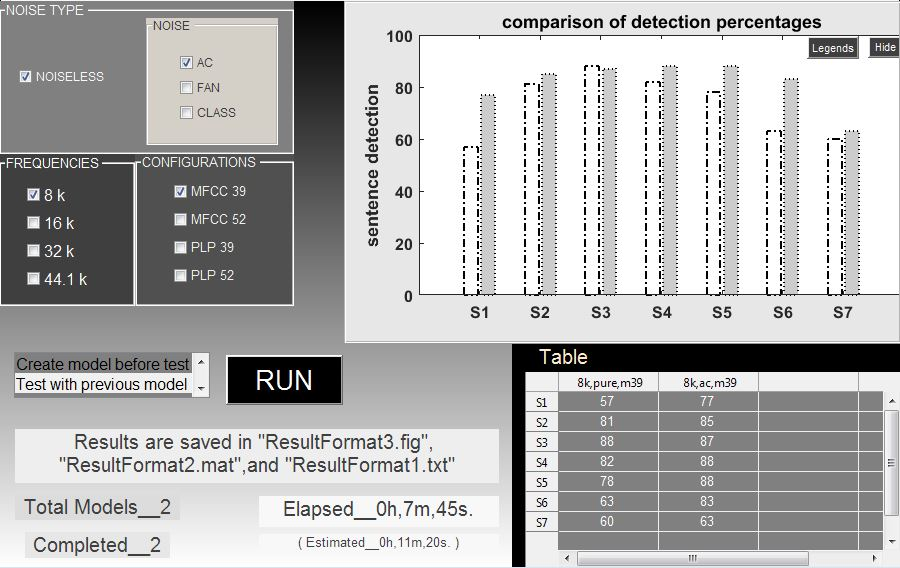
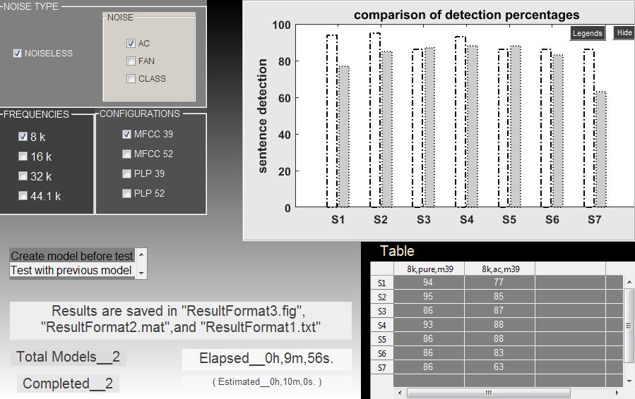

<h1 style="padding-left:4%;padding-top: 2%;padding-bottom: 2%;padding-right: 10%;border-bottom: 1px solid #BDBDBD;">


JPEG/PNG to PDF Converter


</h1>


A Matlab based program


<h2><a href="imgpdf.mp4" target="_blank"> Process </a></h2>


<h3><u>JPEG Files</u></h3>











<h2><u>PDF File</u></h2>

<embed src="y.pdf" style="width:50%;height:70%;padding-left:10%">
